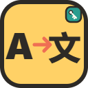

AI 网页翻译 · 英文转中文隐私政策
生效日期：2026-11-18
1. 我们处理哪些数据
保存在浏览器本机的数据
扩展使用浏览器的本地扩展存储（chrome.storage.local）保存：
- 翻译服务配置：名称、请求地址、模型名、自定义请求头、额外请求参数；
- 你填写的 API Key（仅保存在本机，不会同步到云端）；
- 翻译提示词与译文缓存；
- 网站偏好：自动翻译网站列表、永久关闭悬浮按钮的网站列表；
- 悬浮按钮位置。
这些数据不会发送给扩展开发者。卸载扩展或清除扩展数据会删除它们；你也可以在设置页清空译文缓存。
发送给你配置的 AI 服务的数据
只有在你点击翻译、使用划词翻译，或为当前网站开启自动翻译后，扩展才会把以下内容发送到你填写的 OpenAI 兼容 Chat Completions 端点：
- 选中的文本，或页面上待翻译的英文段落与界面文本；
- 必要的翻译上下文，例如页面标题、所在章节标题、相邻段落文本；
- 你为该服务配置的 API Key（通过请求头发送）；
- 模型名与你设置的额外请求参数。
这些请求直接发往你配置的服务商，不经过扩展开发者。服务商如何存储、使用或保留这些数据，取决于该服务商的隐私政策与服务条款。请只配置你信任的服务。
我们不收集的数据
- 不收集浏览历史、位置、健康、财务或通讯录数据；
- 不使用分析、遥测、广告或用户画像；
- 不使用 Cookie 做跨站追踪；
- 不出售或出租用户数据；
- 不把 API Key 或页面内容发送给扩展开发者。
2. 权限说明
-
读取和更改你访问的网站上的数据（
http://*/*、https://*/*）：用于在所有普通网页显示悬浮翻译按钮；只有你触发翻译或开启该网站自动翻译后，才读取页面文字并插入译文。浏览器内部页、扩展商店等受保护页面不会被注入。 -
存储（
storage）：在本机保存翻译服务配置、API Key、缓存、网站偏好与按钮位置。
3. 第三方服务
扩展本身不集成第三方分析、广告或翻译服务。你配置的 AI 服务商是独立的第三方；其数据处理行为受其自身隐私政策约束。
4. 数据保留与删除
- 本机数据保留到你主动清除缓存、删除配置、卸载扩展或清除扩展数据。
- 发送给 AI 服务商的数据保留时间由该服务商决定；如需删除，请按照该服务商的隐私政策操作。
- 你可以在设置页的“译文缓存”中清空缓存，在“翻译服务”中删除配置与 API Key。
5. 儿童隐私
本扩展不面向儿童，也不会主动收集儿童的个人信息。
6. 政策变更
如果数据处理方式发生变化，我们会更新本页并修改生效日期。重大变更会在扩展更新说明或设置页中提示。
如对本政策或数据处理有疑问，请联系：
q1806314252@gmail.com
Privacy Policy (English summary)
AI Web Translator (English → Chinese) is a bring-your-own-AI browser extension. We do not operate a translation server, do not collect analytics, and do not receive your page content or API key.
Settings, service profiles, API keys, cached translations, site preferences, and the floating-button position are stored locally in your browser using extension storage. They are not sent to the developer.
When you translate a selection or page, or enable auto-translation for a site, the extension sends the relevant text and minimal context (such as the page title, section heading, and neighboring paragraph) to the OpenAI-compatible endpoint that you configure. Your API key is sent only to that endpoint as an authentication header. The selected provider's own privacy policy governs its handling of that data.
We do not collect browsing history, location, health, financial, or contact data; we do not use analytics, ads, or tracking; and we do not sell or share user data with the developer or other third parties.
The extension requests broad host access (http://*/*, https://*/*) so it can show
the floating translate button on any ordinary web page and read page text only after you invoke
translation or enable auto-translation. The storage permission is used for local settings and
cache.
Contact: q1806314252@gmail.com